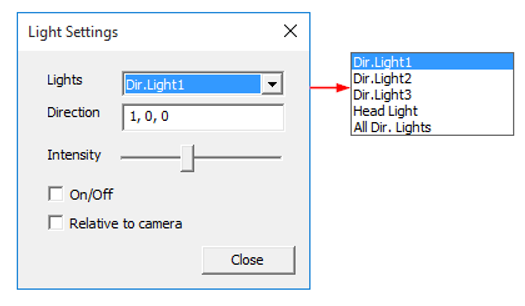

Light Settings
VCollab Pro lets users alter light settings for better visualization, especially inside the parts.
There are two types of lights whose settings can be altered for better viewing:
- Head Light
- This light is attached to the camera. Light direction is updated automatically whenever camera direction changes.
- Users can turn on/off this light, but cannot edit the light direction.
- Direction Lights
- There are three direction lights with three mutually perpendicular directions which are switched off by default.
- Users can turn on/off these lights and can edit each light direction.
- Users can attach these lights to the camera or remove them from the camera.
- Users can vary the light intensity from least bright to most bright.
Light Settings Panel

The various controls and fields available in the light settings panel are explained below.
| Lights | Select a light for editing |
| Direction | Edit the direction of selected light. Not applicable for Head Light and All Dir. Lights. |
| Intensity | Changes light brightness |
| On/Off | Turns On/Off the selected light. |
| Relative to Camera | Attaches the selected light to camera. Applicable for individual direction lights. |
Steps to enable lights in VCollab Pro
- Load a CAX file with multiple parts.
- Headlight will be turned on by default.
- Find a dark area, between parts or inside a part.
- Focus the view to the dark spot using the pan,zoom and rotate options.
- Click Edit | Light Settings..
- Select a directional light.
- Turn on the light by checking the On/Off checkbox.
- Change the direction of light if the dark spot is not lit up well.
- Increase the intensity for better brightness.
- Click Relative to camera to attach the light to the camera.
Note: 'Relative to Camera' and 'Direction' options are not applicable for All Dir. Lights and Headlight.